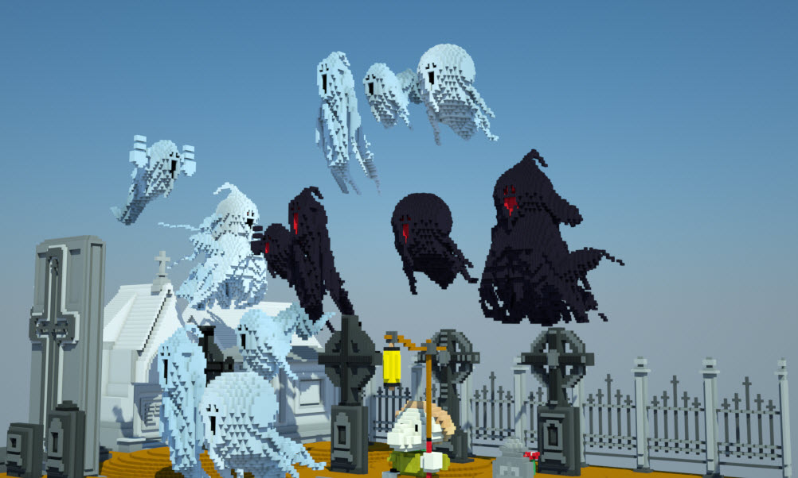
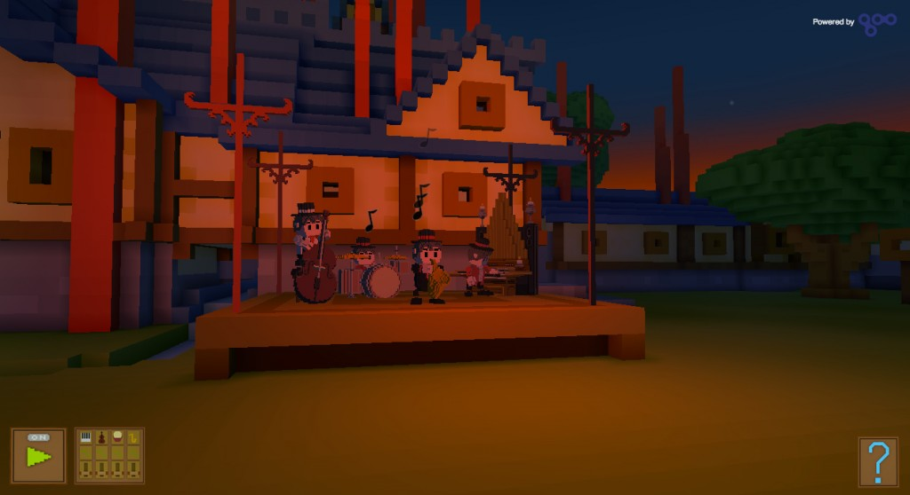
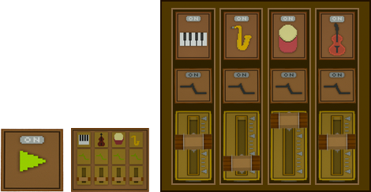
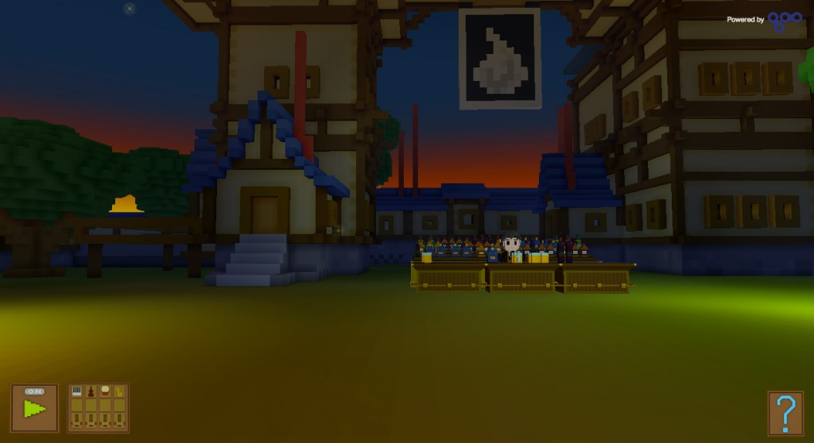
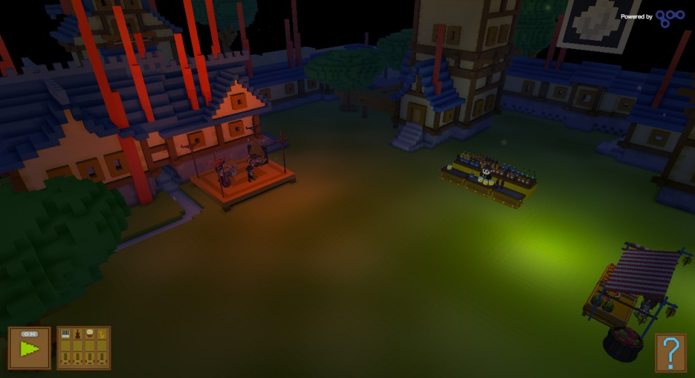

才聽到 Mozilla Firefox 即將支援 Web Audio API 之後，我們馬上就開始構思 Web Audio API所能應用的地方。
我們找到「Legend of Diridum」(細節可參閱下方說明) 遊戲開發團隊並討論了專案細節，最後以該遊戲背景的舞台，設計了一處小市集和一組爵士小樂團。我們想呈現實際生活中的市集感覺：樂團還在調音熱身，逛市集的人潮還沒出現。時間正好是晚風徐徐，某個派對開始前的傍晚。
我們稱此展示為「Songs of Diridum」。

Web Audio API 能達到的效果
先從三個角度來簡單看一下 Web 音訊系統：遊戲設計、音訊工程、程式設計。
對遊戲設計者而言，Web Audio API 可微調遊戲的聲景 (Soundscape)。我們同步執行多個獨立音效並調整音效的特色，以符合環境或遊戲機制的要求。你可調整為如同門後傳來的悶響，亦可開啟濾音器造成如同開門之後的清晰音效 (而且都是即時產生效果)。用遊戲角色走過教堂的走道時，也能加入環境所反射的腳步聲。街道的環境聲音也能隨著腳步聲產生回音效果。我們也對法師所發出的火球加上火焰燃燒聲，投出之後就能聽到火球朝著目標飛去。另可透過都卜勒效應的移調 (Pitch shift)，聽到警車鳴笛由遠而近呼嘯而過。而且不需管理音訊引擎的產出狀況，就能使用這些功能。Web Audio API 已可順利運作。
而從音訊工程的角度來看，我們可將 Web Audio API 視為磁帶機與混音器的大型配線槽。我們不需耗費太多心力處理初階作業 (如調整音量)。系統的基本功能可在播放音效時順利調整音量，而不會在改變其他音效樣本的音量時造成數位失真。系統亦能針對此類調整而執行必要的插補 (Interpolation)。我們也能自行設計不同的音效，並根據需要而隨時應用。只要不是過於龐雜的系統，Web Audio API 甚至可當做音樂工作室使用。
另從程式設計師的角度來看，我們可以輕鬆針對自己的專案撰寫出程式碼。遇到問題也能在網路上尋找解決方案。我們不用再耗時去學某些說明文件貧乏的專利音訊引擎。大多數的問題，可能都是與程式碼的結構相關。我們只需解決音效的載入作業與載入時機，另考量應該使用哪些合適的資料結構或其他設計管道，以順利將音效提供給遊戲設計者。我們也能與其他團隊合作，仔細評估音效系統的預算、能佔用多少資料量、能同時播放哪些音效、目標平台又能使用幾種音效等問題。這裡最困難的問題與技術風險，大概就是該如何處理 Web 上執行的多樣硬體與瀏覽器。
關於 Legend of Diridum
我們取名的「Songs of Diridum」，就是以「LOD: Legend of Diridum」遊戲的圖像與設定為背景。而 LOD 團隊是由 Michael Stenmark 這位遊戲設計老手所帶領。

LOD 是能簡單上手的角色扮演遊戲，以自創的特定世界為舞台。此遊戲取材自《冒險奇譚 (Grandia)》、《最終幻想 (Final Fantasy，舊譯為太空戰士)》、《薩爾達傳說(Zelda)》，混合了日系奇幻風格與角色扮演的要素，而遊戲方式就類似《動物之森(Animal Crossing)》與《當個創世神 (Minecraft)》。
此遊戲設定為大型的奇幻世界，時間是在慘烈的魔法戰爭之後。整個世界充滿了怪獸、鬼魂、殭屍 (部分是由巫師所操控的軍隊)，而玩家一開始是直屬於帝國的抓鬼獵人，必須清除邪惡勢力以保護 Diridum 的人民。LOD 是以 Goo Engine 所打造，不需另外下載任何程式就能直接在幾乎所有 Web 瀏覽器上執行。
關於音樂
歌曲和音樂對於氣氛營造極為重要，更能強化夏夜派對的火熱感覺。而混音師 Adam Hagstrand 確實達到了此目的。我們很喜歡他所設計的慵懶爵士音樂風，聽起來就是樂團在人潮出現之前的樂器調整與暖身活動。
用 Goo 引擎迅速建立 3D 遊戲
我們喜愛 Web 與 HTML5。多款裝置的瀏覽器均可執行 HTML5，而且不需下載或安裝其他特殊的用戶端軟體。由於可在瀏覽器中直接執行遊戲，因此幾乎任何網站均可發佈遊戲；進而造就絕佳的商機與社交媒體整合方式。
我們想把 Songs of Diridum 設計成 HTML5 的瀏覽器遊戲，但又要如何達到 3D 效果呢？答案就是 WebGL。WebGL 是 HTML5 的新標準，可讓遊戲如同原生 App 一樣存取硬體加速功能。HTML5 帶入 WebGL 又再次造成瀏覽器的大躍進，達到之前所沒有的圖像品質。WebGL 除了強化 HTML5 之外，遊戲期間也不需太高的頻寬。因為遊戲進行之前與進行期間，早已下載了相關遊戲要素 (即預先快取)，所以對網路連線速度的要求也不高。
但從頭建構 WebGL 遊戲是項大工程。由 Goo Technologies 所提供的 Goo Platform 則可簡化 WebGL 遊戲與應用程式的建構過程。另將於 11 月發表更簡單易用的 Goo Create。
Goo 就是 HTML5 與 WebGL 架構的圖形開發平台，可強化新一代的 Web App 與遊戲。Goo一開始即針對圖像的效能與順暢性所設計，並嘗試簡化圖像工程師的工作。因為 Goo 就是 HTML5，所以工程師不需再下載特殊的軟體或瀏覽器外掛程式，就能在 Web 上建構並發佈高階的互動式圖像。透過 Goo，工程師能在平板電腦、行動裝置、桌上型電腦、筆記型電腦、智慧型電視上發佈硬體加速的 App 與遊戲。除了能迅速描繪出平滑又豐富的圖像之外，也達到之前無法想像的瀏覽器遊戲經驗。

撰寫 Songs of Diridum
我們集結團隊中的七個人設計出展示專案，而且相對所耗的時間也更短。其他的團隊成員則不定時更新我們的資料與程式碼。大抵說來，我們並未按照正規的開發程序進行，但卻達到之前必須投入大量人力才能有的成果。
此展示的程式設計可清楚分為「建構場景」與「組織音效系統」共二個部分。由於使用者介面 (UI) 主要將控制音效系統的狀態，因此直接以 UI 呈現音效系統。方法簡單，也需解決相對簡單的問題。建立這種小型 3D 世界的大多數工作，就是要將模型資料載入到3D 空間中的不同位置。我們以 Goo 引擎完成所有初步的程式設計作業，包含以正確的顏色描繪整個場景，並處理物件的外觀形狀；因此這些部分完全不需再另外撰寫程式碼。
為了將模型資料添增至場景中，我們定義了簡易的資料格式，另可為遊戲世界添增音效與較複雜的系統 (如水流冒泡音效與角色動畫)。
你可試著玩玩這個小型的混音器面板，可變更音效系統動態產生的混音效果：

因為我們想讓觸控裝置也能執行此 App，所以此 UI 選用了可點擊的按鈕。但目前市面上的行動裝置琳琅滿目，時間不夠我們測試其他控制介面是否合用。
在 3D 世界中使用 Web Audio API
為了建構 3D 世界的聲景，我們必須將音源與玩家的耳朵進行「空間定位(Spatialization)」。聲音與聽者的空間概念可歸納為方向、速度、位置共三方面。各個音源能以定向錐 (Directional cone) 的方式發出聲音。簡言之，這個方法將模擬前、後端揚聲器的差異。但因為鋼琴的聲音在所有方向中聽起來幾乎都一樣，所以這裡並未特別設計鋼琴琴音的方向性。但擴音器的方向性相對就較高，因此在擴音器前方聽到的音量應大於後方音量。
if (is3dSource) {
// 3D sound source
this.panNode = this.context.createPanner();
this.gainNode.connect(this.panNode);
this.lastPos = [0,0,0];
this.panNode.rolloffFactor = 0.5;
} else {
// Stereo sound source “hack”
this.panNode = mixNodeFactory.buildStereoChannelSplitter(this.gainNode, context);
this.panNode.setPosition(0, this.context.currentTime);
}
123456789101112
if (is3dSource) { // 3D sound source this.panNode = this.context.createPanner(); this.gainNode.connect(this.panNode); this.lastPos = [0,0,0]; this.panNode.rolloffFactor = 0.5;} else { // Stereo sound source “hack” this.panNode = mixNodeFactory.buildStereoChannelSplitter(this.gainNode, context); this.panNode.setPosition(0, this.context.currentTime);}
聲音位置將決定左右相位 (Panning，將聲音放置於左右喇叭之間形成的立體音場中，以產生出空間感) 的效果；也就是決定應發出較大音量的揚聲器，及其音量的高低。
「聲音的速度」加上「音源與聽者的位置」，均將提供相關資訊，以利此世界中的所有音源進行都卜勒頻移 (Doppler shift)。而針對其他環境的影響 ─ 如上述門後的模糊悶響，或以空間效果 (Reverb) 變更房間內的聲音 ─ 我們必須另外撰寫程式碼並配置處理節點，以達到所需的效果。
在將聲音添增到 UI 並產生類似的環境效果時，我們可直接加入聲音而略過空間化，讓整個作業更簡單。當然，開發者仍能夠處理相關效果，並照自己的意思自由發揮；甚至可隨時在滑鼠點擊之處，讓既有聲音產生位移的效果。
使用 Web Audio API
使用 Web Audio 之前的設定程序很簡單。比較麻煩的部份，就是必須先估算所應預載的聲音，後續又該載入多少聲音。而載入聲音包含二組可能極為緩慢的非同步作業，這也是必須考量的部份：分別是下載作業，以及從小型格式 (如 OGG 或 MP3) 轉為 arraybuffer的解壓縮作業。如果是在本端電腦上開發，你會發現解壓縮速度比下載速度慢。而各個使用者的設備與網路速度不甚相同，因此下載速度又因人而異。

來玩玩聲音串流
一旦將某個聲音解壓縮完畢，即可用以建立一組音源。音源屬於相對較初階的物件，可在某個速度之下，將本身的聲音資料串流至特定的目標節點。而簡易系統中的目標節點，應該就是揚聲器輸出。但即使是這種簡易系統，你仍可以設定聲音的播放速率，以改變其音高 (Pitch) 與音長 (Duration)。而 Web Audio API 具備的另項絕妙功能，就是可隨時插入變化的效果 (例如調整音高與音長)，以滿足開發者的需要。
添增音效：失真、延遲、空間效果
若要為這個簡易系統添增音效，則可於音源與揚聲器之間放置處理器節點。我們的音訊工程師則是將音源分為「乾 (Dry)、「濕 (Wet)」共二項元件；前者代表未處理過的聲音，後者則為處理過的聲音。接著將此二項元件傳送到揚聲器，並分別對此二項音軌添加增益節點 (Gain node)，以調整二者之間的混音。工程領域所謂的「增益」其實就是「音量」。你可照自己喜好，在音源與揚聲器之間添加任何節點，進而造成同步效果或連續效果。在撰寫自己的系統時，最好能考慮到各個既定節點，讓變更接線的方式越簡單越好。
結論
我們很高興能看到「Songs of Diridum」的成果，也著實驚豔於目前 Web 瀏覽器所能提供的 3D 與音訊效能。希望行動裝置能很快滿足消費者的效能需求，而 HTML5 也將成為最全面性的跨平台遊戲環境。
現在就來玩「Songs of Diridum」吧！

原文連結：Songs of Diridum: Pushing the Web Audio API to Its Limits